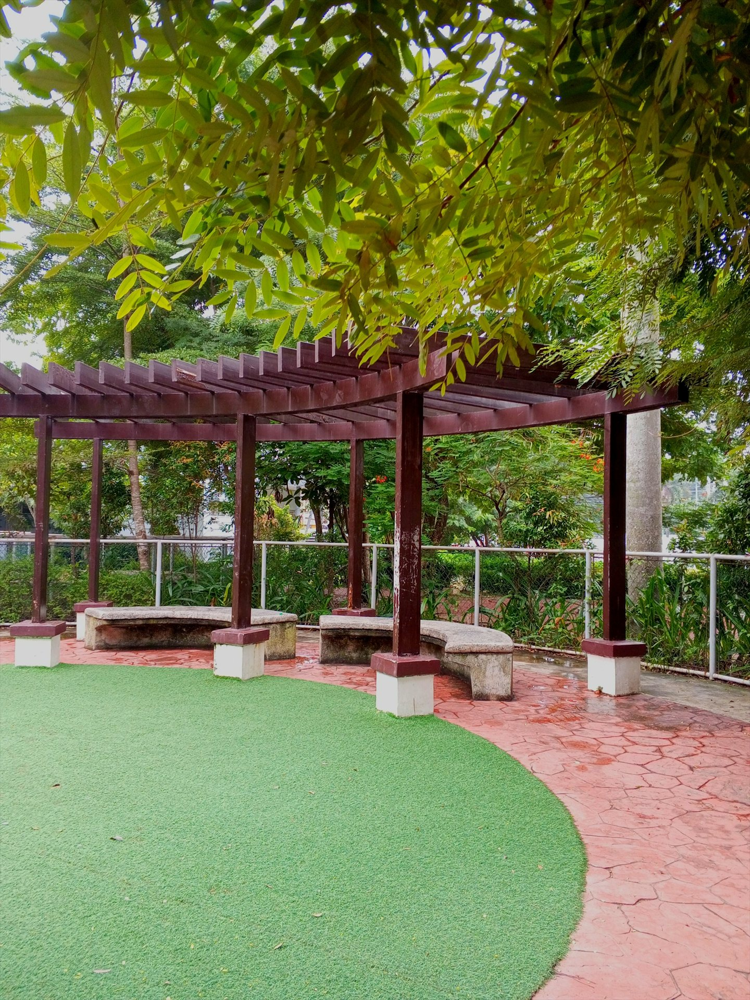
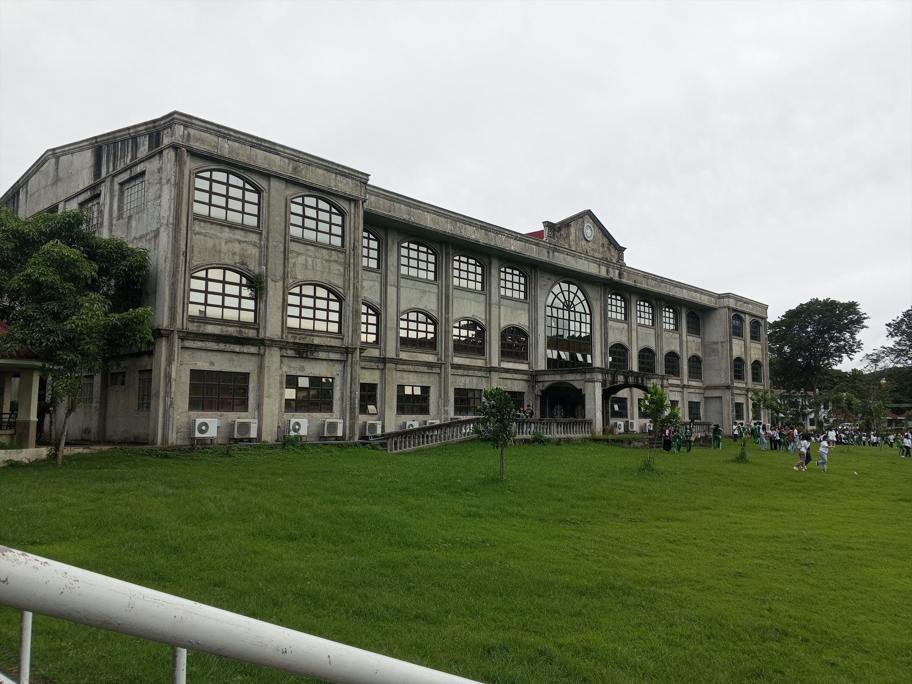
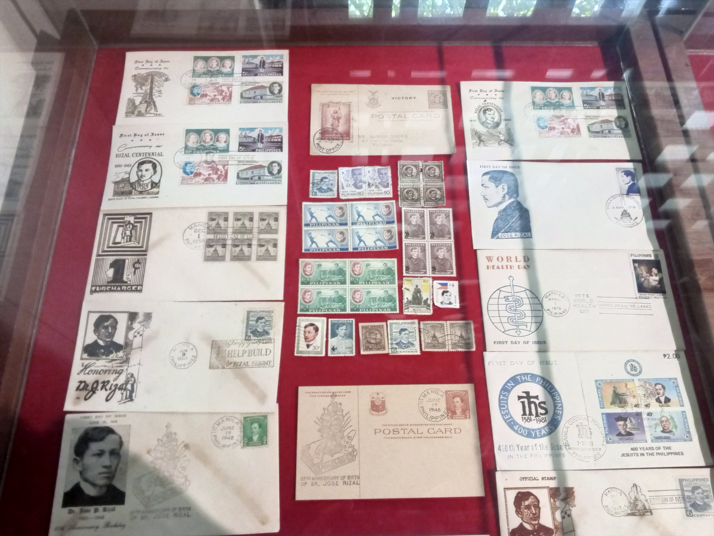
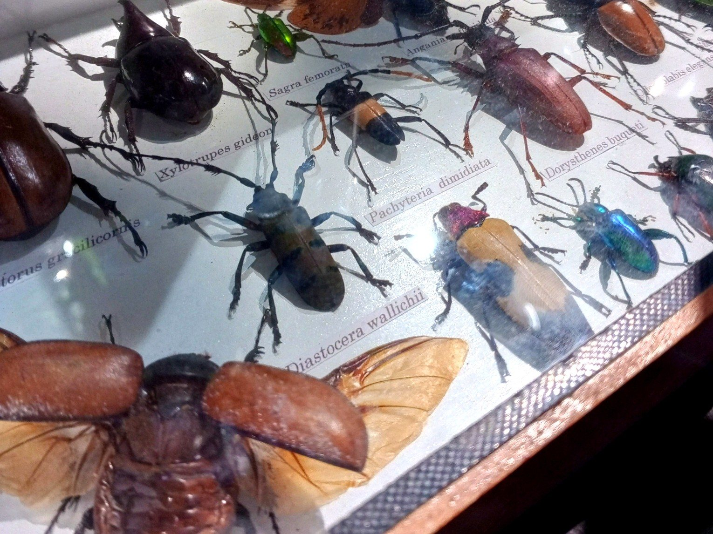
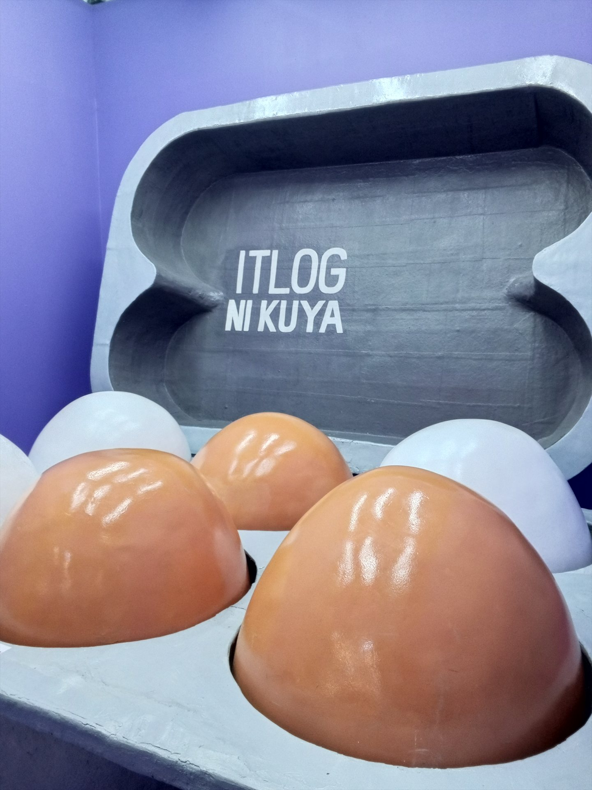
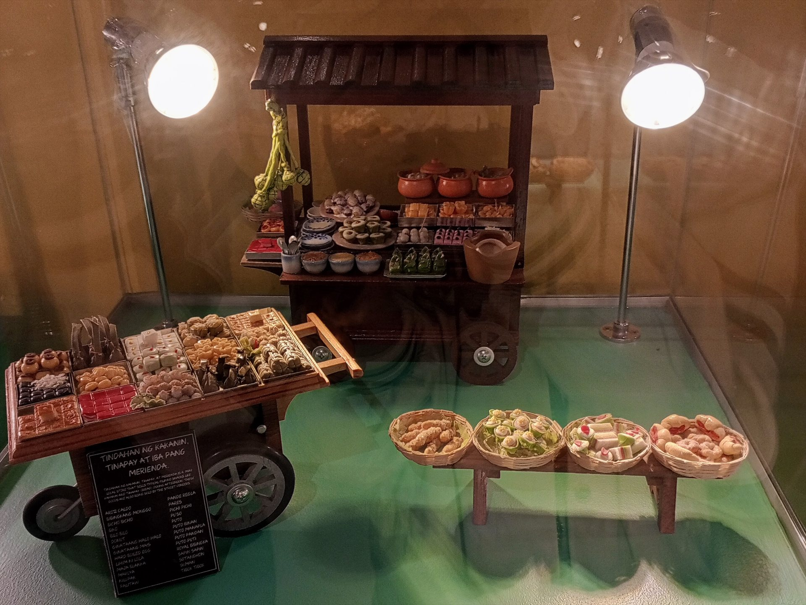
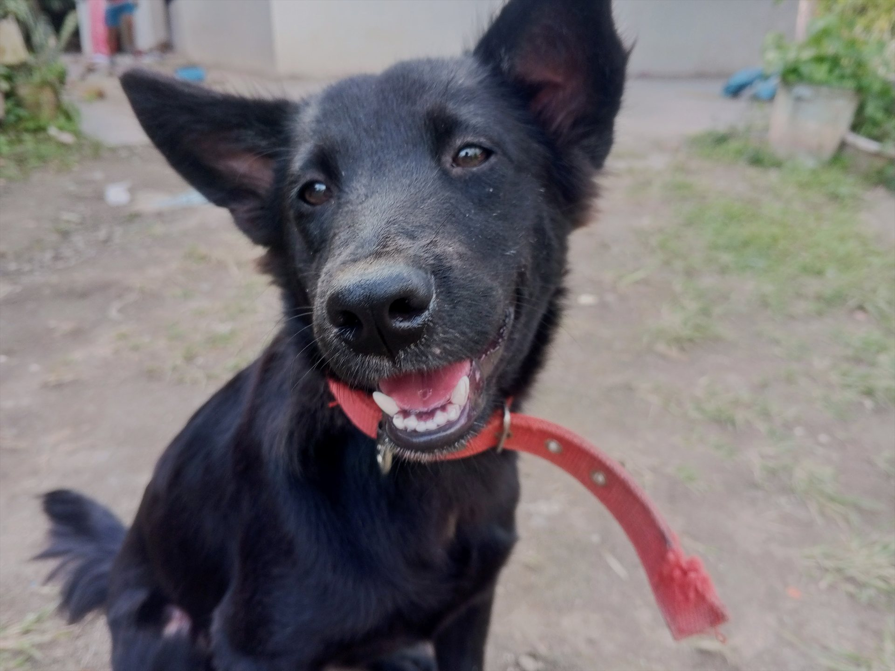
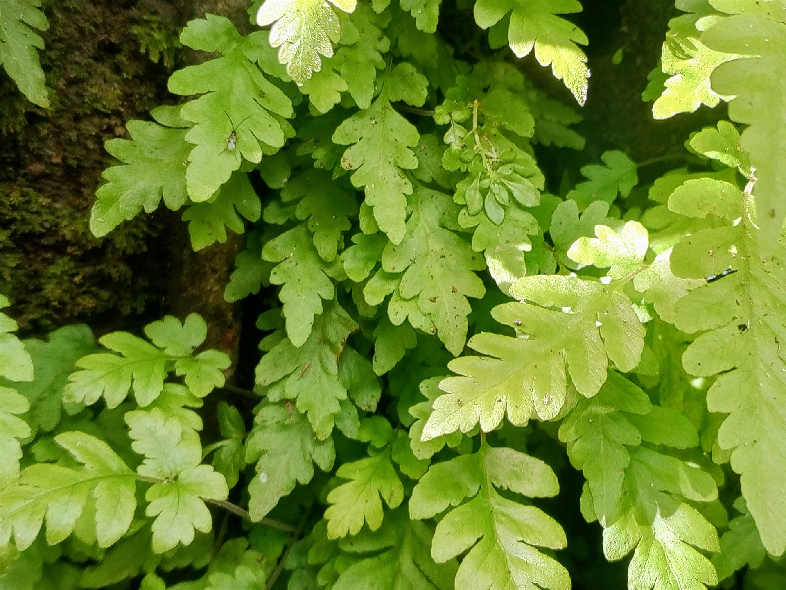
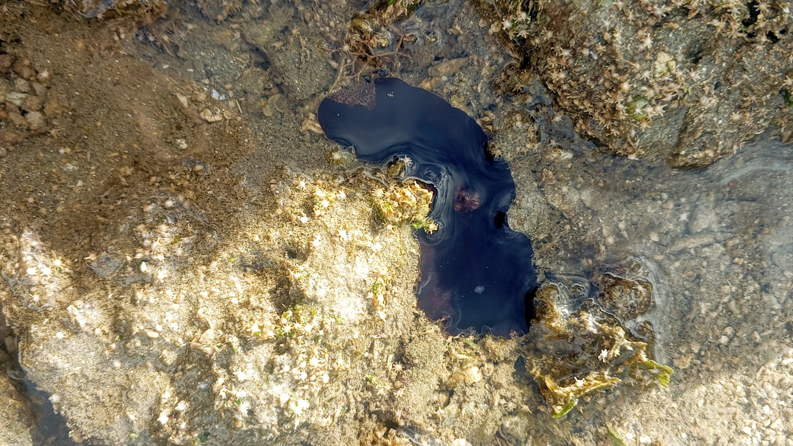

// THROUGH MY LENS
Mobile Photography
Photos I captured with just a phone.

Clouds, Peaks, and the Terminal Below

The Tiny Wonders Gallery

Wings, Shells, and Shimmering Details

A Prehistoric Encounter

A Little Clam, a Lot of Character

The Shore at the Edge of Day

Citrus Wings, Painted by Nature

The Book's Unexpected Night Guest

A Shady Pause Under the Pergola

Campus Stories in Stone

History, One Stamp at a Time

Museum Showcase: Beetles in Every Shade

Itlog ni Kuya: Eggs on Display

Kakanin, Scaled Down and Sweet

Smile!

A Quiet Surprise Between the Rocks

Venom of the Sea